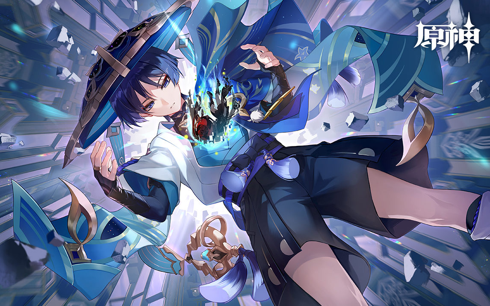
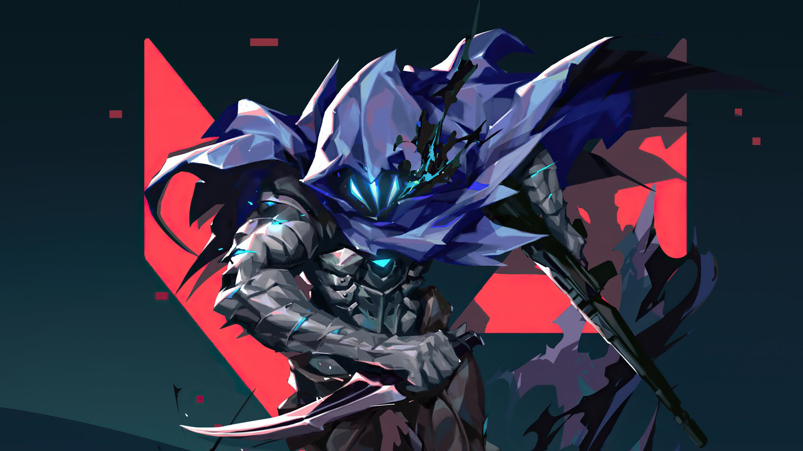
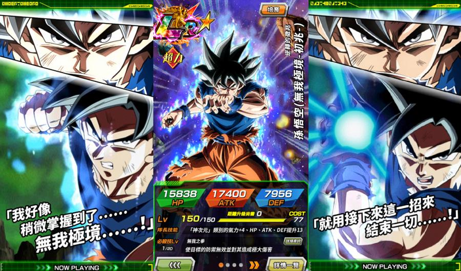

遊戲
原神
《原神》是米哈遊開發的動作角色扮演遊戲，於2020年在Microsoft Windows、Android、iOS、PlayStation 4和PlayStation 5平台發行。遊戲具有動漫風格的開放世界環境，採用基於抽卡的基本免費及道具收費制。
遊戲劇情於虛構世界的提瓦特大陸上展開，該世界分成七個國家，每個國家都以一種元素為主題，並由一位神明所統治。遊戲劇情的主角為「旅行者」，是一對在無數個世界中漂流的兄妹，因遭遇陌生神明阻攔在提瓦特被迫分離。 玩家將扮演旅行者，為了尋找自己失散的唯一血親，與派蒙一同遊歷七國。

瓦羅蘭
《特戰英豪》（英語：VALORANT，中國大陸譯作「無畏契約」，香港常用英文，又譯作「瓦羅蘭」），是一款由Riot Games開發的免費多人第一人稱射擊遊戲。該遊戲於2019年10月首次發布，代號為Project A[1]。於2020年4月7日發布封閉測試版，於2020年6月2日正式發行。[2]
遊戲中有各式各樣的武器，以殺死敵軍、安裝炸彈、拆除炸彈以及回合勝利所獲取稱為「信幣（Creds）」的金錢，經由經濟系統來購買所需要的槍枝及護甲。遊戲內共有七種武器，分別為手槍、衝鋒槍、霰彈槍、重型武器、步槍、狙擊槍及近戰武器。 與其他第一人稱射擊遊戲相同，每種武器均有後座力，須由玩家控制才能做到精準射擊。

七龍珠爆裂激戰
本作以超人氣漫畫《七龍珠（ドラゴンボール）》為題材改編，將在遊戲中呈現原作的內容。遊戲中的戰鬥系統採用讓玩家集「氣」發招的玩法，敵人被轟飛後還會呈現出彷彿「撞破」玩家手機螢幕的特效。
玩家在遊戲中可透過闖關的方式在《七龍珠》世界裡冒險，並與強敵戰鬥。地圖是以類似大富翁的方式來呈現，闖關過程中可以取得各式各樣的道具、提升能力甚至是觸發事件。
